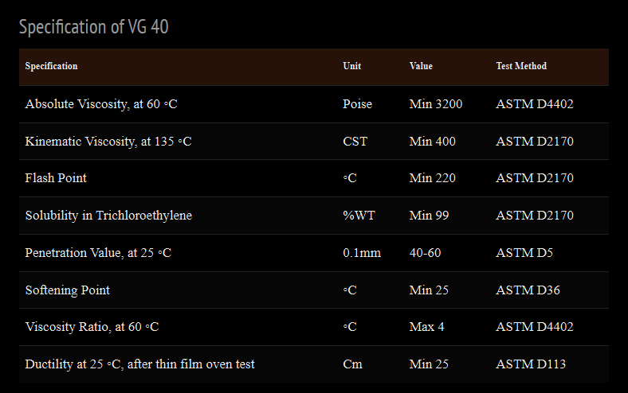

What Is Viscosity Grade Bitumen VG‑40? – Iran Bitumen Supply Int │ IBSI
Viscosity Grade Bitumen VG‑40 is the strongest and most durable viscosity‑graded bitumen used in modern road construction. It is a highly viscous binder derived from refined crude oil and engineered specifically for high‑traffic highways, industrial pavements, and heavy‑load infrastructure. Compared to VG‑30, Bitumen VG‑40 offers significantly higher stiffness and resistance to deformation, making it the preferred choice for regions where pavements must withstand intense axle loads, high temperatures, and continuous stress. With a viscosity range of 4000 to 6000 cP at 60°C, VG‑40 maintains its structural integrity even under extreme heat. This high viscosity ensures that the binder remains stable, adheres strongly to aggregates, and forms a dense, durable asphalt matrix. As a result, VG‑40 is widely used in expressways, national highways, industrial zones, and areas where heavy trucks, buses, and machinery operate daily.
Applications of Viscosity Grade Bitumen VG‑40
Bitumen VG‑40 is primarily used in hot mix asphalt (HMA) for the construction of high‑performance pavements. Its superior viscosity makes it ideal for warm climates and locations where pavements are exposed to heavy traffic loads. It is commonly used in the construction of highways, expressways, and major arterial roads, where long‑term durability and rutting resistance are essential. VG‑40 is also used in pavement rehabilitation projects, where it helps restore the strength and flexibility of aged asphalt surfaces. In the aviation sector, it is applied in the construction and maintenance of airport runways and taxiways, which require exceptional load‑bearing capacity. Bridge decks benefit from VG‑40’s temperature resistance and stiffness, helping extend the lifespan of the structure. Beyond paving, VG‑40 is used in roofing and waterproofing applications, providing a protective barrier against moisture. It is also used in the production of emulsions, coatings, adhesives, and corrosion‑resistant materials for industrial use.
Properties of Viscosity Grade Bitumen VG‑40
VG‑40 is defined by its high viscosity at 60°C, typically ranging from 4000 to 6000 cP, which reflects its resistance to flow under elevated temperatures. Its penetration value at 25°C usually falls between 40 and 60 dmm, indicating a harder and more resilient binder compared to lower viscosity grades. The softening point generally lies between 50°C and 60°C, ensuring stability in hot climates. The ductility of VG‑40 is typically around 100 cm at 25°C, demonstrating its ability to stretch without cracking. Its flash point is approximately 250°C or higher, ensuring safe handling during heating. VG‑40 is fully soluble in standard solvents, confirming its purity and suitability for industrial applications. It is also designed to be compatible with a wide range of aggregates used in asphalt mixtures, making it a reliable choice for heavy‑duty paving.
Packing Options for Bitumen VG‑40
At Iran Bitumen Supply Int │ IBSI, Bitumen VG‑40 is available in several packaging formats to meet diverse project requirements. It is commonly supplied in 180‑kg new steel drums, with approximately 110 drums loaded into a 20‑foot container. For larger quantities, VG‑40 can be shipped in 375‑kg Bitubags, allowing up to 24 metric tons per container. Bulk shipments are available via bitumen carriers ranging from 2,000 to 20,000 metric tons. Additional options include flexi bags with a capacity of 20 metric tons and tanker trucks capable of transporting 25 metric tons.

Specification of Bitumen VG‑40